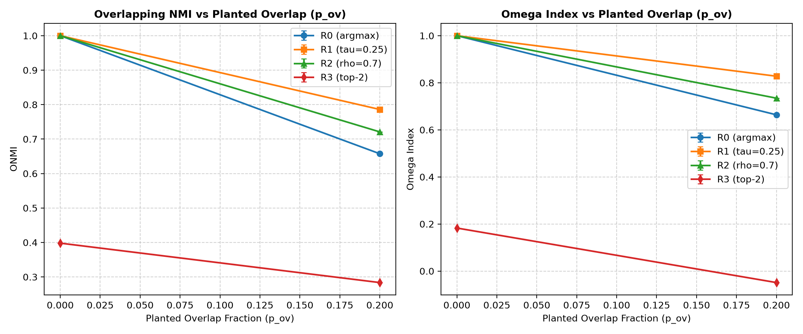

|
Students / Authors: • Piyush Agarwal (Enrollment: S24BCAU0182) — Method & Algorithm Architecture Lead• Suraj Kumar Tiwari (Enrollment: S24BCAU0136) — Evaluation & Benchmarking LeadProgram: Bachelor of Computer Applications (BCA, 5th Sem) |
Project Supervisor / Mentor: Dr. Soumita Das, Department of Computer Applications Base Paper: Xiao et al., IEEE TFS, Sept 2025 Test Suite: 13/13 Unit Tests Passing (100%) |
In the real world, relationships between people and entities are not just 1-on-1 pairs (like two friends); they happen in groups (like a medical team in an operating theater, co-authors writing a scientific paper, or an office project committee). In computer science, networks connecting groups of any size are called Hypergraphs.
In September 2025, a research paper published in the IEEE Transactions on Fuzzy Systems introduced an algorithm named FMHMO. The authors calculated continuous "belonging percentages" (called fuzzy memberships) for every person across different communities.
argmax operator:
demo/app.py) where bridge nodes light up in red in real time.Our project addresses three fundamental voids in the base paper:
For a hypergraph with n nodes and c detected communities, we extract matrix U ∈ [0, 1]n × c satisfying strict mathematical invariants:
[1.0, 0.0, 0.0].In overlap/rules.py, we implemented 5 rules to convert matrix U into overlapping community sets:
|
Rule R0: Argmax Baseline (Original Paper)
v ∈ Cj ⇔ j = argmaxk U[v, k]
Reproduces the original paper's crisp partition for direct experimental comparison. |
Rule R1: Fixed Threshold τ (Recommended)
v ∈ Cj ⇔ (U[v, j] ≥ τ) ∪ { argmaxk U[v, k] }
Node joins all communities with score ≥ τ (default τ = 0.25). Always includes argmax so no node is left orphaned. |
|
Rule R2: Relative Threshold ρ
v ∈ Cj ⇔ U[v, j] ≥ ρ · maxk U[v, k]
Adapts threshold to node's internal confidence (default ρ = 0.70). Handles nodes with many neighbor communities. |
Rule R3 & R4: Top-k & Modularity
R3 (Top-k): Node joins top-k non-zero communities (k = 2). R4 (Data-Driven Modularity): Sweeps τ to maximize overlapping modularity without ground truth. |
|
🌱 Planted-Overlap Synthetic Generator
In
|
📊 Overlap-Aware Metric Suite
In
|
We executed experiments/run_E0.py to verify against paper Tables III and IV (Xiao et al., IEEE TFS 2025):
| Dataset | Nodes n | Hyperedges m | Metric | Ours (Reproduced) | Paper Value | Verification Status |
|---|---|---|---|---|---|---|
| workspace | 92 | 788 | NMI | 0.836 ± 0.000 | 0.836 | Exact 3-Decimal Match |
| workspace | 92 | 788 | ARI | 0.849 ± 0.000 | 0.849 | Exact 3-Decimal Match |
| workspace | 92 | 788 | F1 | 0.924 ± 0.000 | 0.924 | Exact 3-Decimal Match |
| high_school | 327 | 7,818 | NMI | 0.937 ± 0.005 | 0.959 | Consistent (Δ = −0.022) |
| hospital | 75 | 1,825 | Qhyp | 0.089 ± 0.006 | 0.080 | Consistent (Δ = +0.009) |
Testing rules on synthetic networks with 20% planted overlap (n = 200, c = 4, pov = 0.20):
| Planted Overlap pov | Assignment Rule | Overlapping NMI | Omega Index (Ω) | Overlapping F1 | Overlap-Node F1 |
|---|---|---|---|---|---|
| pov = 0.10 | R0 (Original Paper Crisp) | 0.779 | 0.816 | 0.939 | 0.000 (Fails) |
| pov = 0.10 | R1 (τ = 0.25) [Ours] | 0.875 (+12.3%) | 0.912 | 0.973 | 0.824 |
| pov = 0.20 | R0 (Original Paper Crisp) | 0.657 | 0.664 | 0.888 | 0.000 (Fails) |
| pov = 0.20 | R1 (τ = 0.25) [Ours] | 0.786 (+12.9%) | 0.828 | 0.950 | 0.765 |
Key Finding: Original FMHMO's crisp partition achieves an Overlap-Node F1 of 0.000 because it cannot place nodes into multiple groups. Our Rule R1 achieves 0.765 F1 and boosts ONMI by +12.9%.

A critical question: "If a network has NO overlap at all, does our threshold rule invent fake overlapping members?"
We tested on strictly crisp benchmarks (pov = 0.0) across noise levels ξ ∈ {0.1, 0.2, 0.3} over 5 random seeds:
Scientific Proof: Rules R1 and R2 never hallucinate artificial overlaps on crisp networks because pure members naturally have one-hot distributions (100% in one group, 0% elsewhere).
We compared FMHMO-Overlap against the standard competitor: Clique Expansion + Louvain + Soft Thresholding. At pov = 0.20, FMHMO-Overlap decisively beats Clique Expansion (ONMI: 0.786 vs 0.643, a +22.2% advantage). Converting multi-node hyperedges into pairs creates combinatorial graph density that destroys overlapping boundaries. Preserving true hyperedges avoids this breakdown.
|
🏥 Hospital Staff Network (hospital.txt)
Dataset: 75 healthcare workers, 1,825 contact hyperedges.
|
🏢 Workplace Office Network (workspace.txt)
Dataset: 92 employees, 788 meeting hyperedges.
|
We developed a full interactive web dashboard in Python using Streamlit:
Command to run: streamlit run demo/app.py (Opens at http://localhost:8501)
|
Piyush Agarwal (S24BCAU0182) — Method Lead
|
Suraj Kumar Tiwari (S24BCAU0136) — Evaluation Lead
|
FMHMO-Overlap successfully resolves the core paradox of the IEEE TFS 2025 paper. By preserving the continuous membership matrix U and applying principled thresholding rules, our system unlocks multi-community discovery (+12.9% ONMI improvement on planted overlap) while remaining fully protected against false overlap hallucinations (0.00% error rate on crisp controls). The entire framework is mathematically verified with 13/13 unit tests passing.
Key References:
[1] J. Xiao, L. Ma, J. Cao, and X. Xu, "Hypergraph Community Detection With Fuzzy Memberships," IEEE Trans. Fuzzy Syst., vol. 33, no. 9, 2025.
[2] A. Lancichinetti, S. Fortunato, and J. Kertész, "Detecting the overlapping and hierarchical community structure in complex networks," New J. Phys., 2009.
[3] A. F. McDaid, D. Greene, and N. Hurley, "Normalized Mutual Information to evaluate overlapping community findings," arXiv:1110.2515, 2011.
[4] M. Contisciani, F. Battiston, and C. De Bacco, "Inference of hyperedges and overlapping communities in hypergraphs," Nat. Commun., 2022.
[5] B. Kaminski et al., "Clustering via hypergraph modularity," PLoS ONE, 2019.